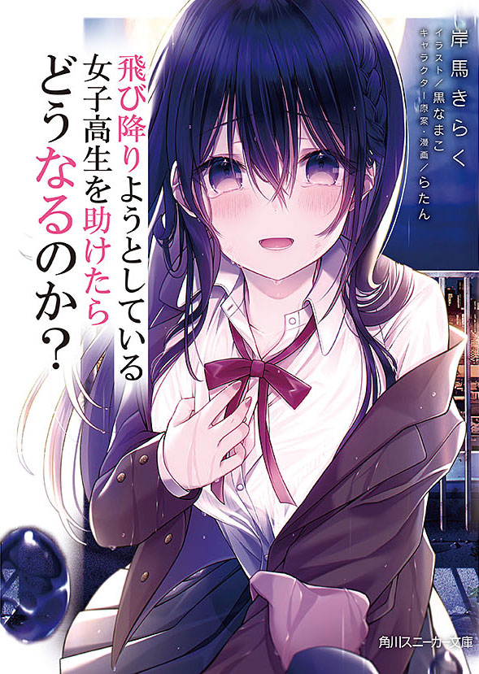

What Happens If You Saved A High School Girl Who Was About To Jump Off
Novel Info's
Status: Completed
Genre: Comedy, Drama, Romance, Slice of Life
Author: Kishima Kiraku
Illustrator: Kuro Namako
Volumes: 4
Original Publisher: Kadokawa
English Publisher: N/A
Fan Translation: I Cant Read JapaneseTL
Description/Sypnosis
The start of a happy life together with a high school girl who has fallen into the bottom of despair――
One day, Yuuki Yuusuke, who spent his high school life only in studying and working part-time in order to maintain his scholarship, found himself strongly wishing for a girlfriend.
On the way home, feeling lonely from such thought, he casually looked up into the sky and saw a girl who was about to throw herself off the rooftop of an abandoned building.
“Why the hell are you doing something like this!” “Because I… don’t have any… reason to live…” “Wait. It’d be a shame for a beauty to die” “….?” “Rather than dying, be my girlfriend” “Eeh?”
Thus, a new love story and daily life with a mysterious girl, Hatsushiro Kotori, which all started from a strange encounter, begins.
Download Links
Epub & Pdf